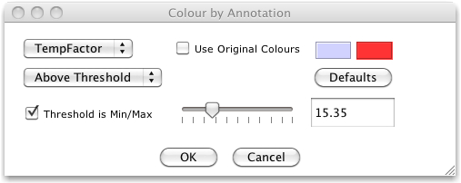
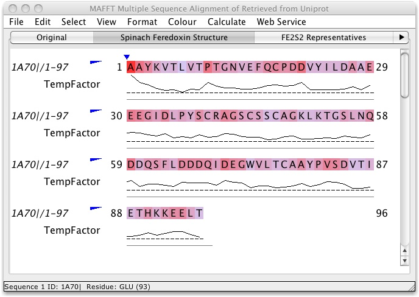

Annotation Colouring
Jalview allows the columns of an alignment to be coloured using any
numerical annotation rows added to that alignment.
Select "Colour" → "..
by Annotation" to bring up the Colour by Annotation settings window.

- Select which annotation to base the colouring scheme on using the top left
selection box.
- If the "Use Original Colours" box is selected, the colouring
scheme will use the colouring scheme present on the alignment before the Annotation
Colour Settings window was displayed.
- The colour scheme can display a colour gradient from a colour
representing the minimum value in the selected annotation to a colour
representing the maximum value in the selected annotation. Use the
"Min Colour" and "Max Colour" to set the colour
gradient range.
- New in Jalview 2.7: Press the "Defaults"
button to reset the minimum and maximum colours to their default
settings (these are configured in the applet's parameters or the application's user
preferences.)
- Select whether to colour the alignment above or below an adjustable threshold
with the selection box center left of the window.
- Change the threshold value with the slider, or enter the
exact value in the text box.
- Select the "Threshold is Min/Max" checkbox to
assign colours using the thresholded range's minimum and maximum
values, otherwise the scale will be defined by the range of values in
the annotation row.
